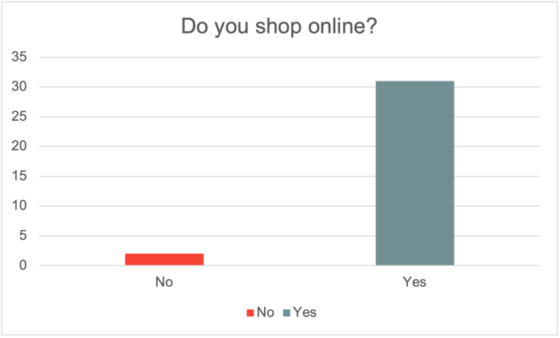
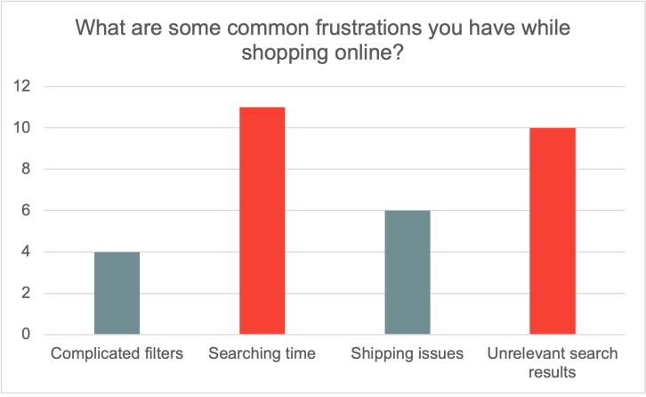
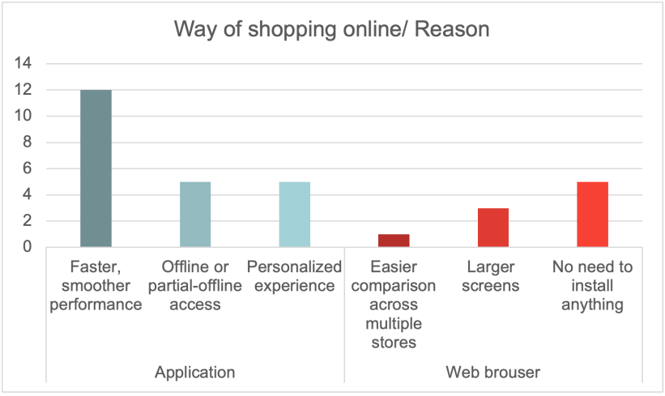
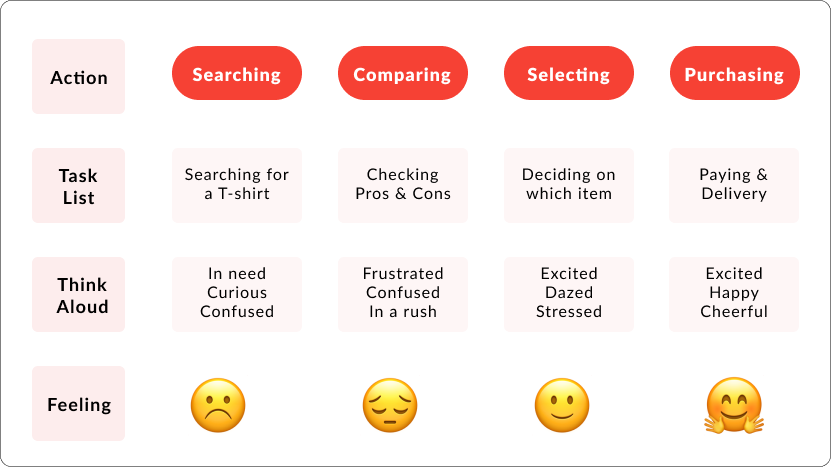
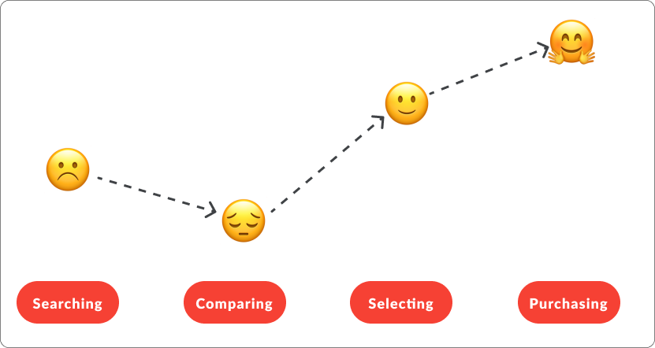
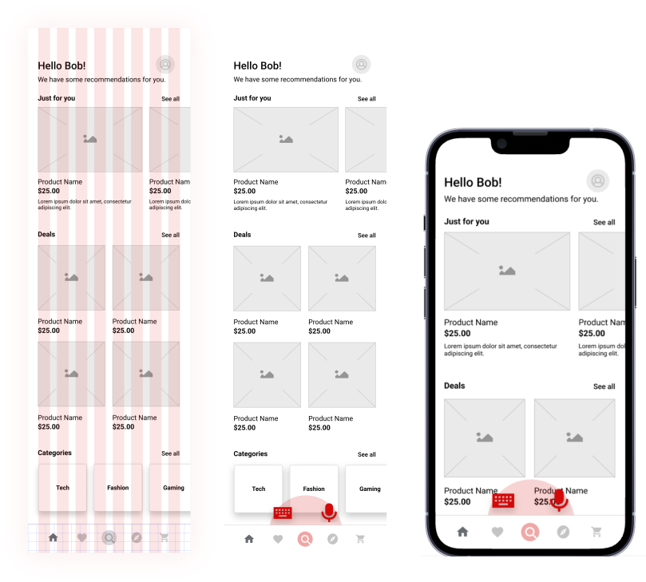

Tote Bag App
 ✕
✕
✕
✕
Overview: A shopping app designed to enhance user experience by leveraging AI to find the perfect products, saving users time by providing accurate products tailored to their needs, eliminating the hassle of endless searching.
Role: UX Researcher, UX/UI designer
Toolkit: Figma, FigJam, Miro, Google form
Test PrototypeUX Research
• Background:
Through a survey with 35 users in Google form, showed that a common challenge in an e-commerce experience is finding the right product. The main frustration identified was the huge amount of time spent searching for the needed product that leads to user being overwhelmed and dropping off from the shopping app.
• Research Goal:
understand the pain points of users while searching for products to improve the experience by an AI driven solution that matches user needs and requirements and finds the best fit.
• Methodologies:
- Initial survey
- Contextual inquiry
- Focus group (Six thinking hats & Wish cards)
Initial survey
• Overview:
This survey focused on finding the challenges users face while using an online shopping app. I designed this survey based on the research goals to identify main pain points in user journey. (N=35)



Contextual inquiry
• Overview:
I asked 8 new users to perform their daily use cases of shopping online on their favorite shopping app and think aloud what they like and don't like while shopping online.
• Findings:
Search Overload & Irrelevance
overwhelming search results, irrelevant listings, leading to confusion and decision fatigue
Difficulty Finding Specific Items
challenges locating exact products due to weak filters, inconsistent search logic
Need for Personalization
a strong desire for more accurate, personalized suggestions
Payment & Checkout Expectations
a broader variety of payment methods beyond PayPal
Focus group
• Overview:
A focus group (N=12) was conducted to explore user attitudes toward online shopping and to evaluate proposed concepts for the Tote Bag shopping app—specifically an AI-powered search function. Users noted their wishes on wishcards per the color of their thinking hats.
The Six Thinking Hats is a powerful method developed by Edward de Bono to approach decision-making and problem-solving from six distinct perspectives
• Findings on Miro:
Analysis
AI should streamline product discovery with fewer steps.
Creativity
Use a more descriptive icon for AI search.
Positivity
AI can make it easier to find relevant products quickly.
Feelings
The AI-driven personalization feels inspiring, and engaging.
Judgement
Concerns about data privacy, data collection, and AI misuse.
Facts
AI should deliver the most relevant results, even if not perfect.
User Journey
• Scenario:
User wants to search for a light white T-shirt online to purchase for summer.
• Goal:
Search for a T-shirt and purchase it.

Emotional Journey

UX Design
Wireframes
Based on the research findings, I created wireframes to visualize the user flow and key features of the Tote Bag app. The wireframes focus on streamlining the product discovery process through AI-powered search functionality.

Design system
I have created a colour pallet with 2 primary colours as well as 4 secondary colours, along with 4 accents. As for Typography, I decided to go with Lato for a simple tone.
Typography
Find the stuff you'll love.
Find the stuff you'll love.
Find the stuff you'll love.
Find the stuff you'll love.
Find the stuff you'll love.
Find the stuff you'll love.
Colour pallet
Components

Buttons
View LibraryKey Takeaways
Challenges:
- Voice search needs fallback options so users can continue shopping even when speaking aloud isn't possible or comfortable.
- Because voice has no visual cues, the UI must give strong confirmations, progress indicators, and error messages.
- Users should be able to switch between speaking and typing at any moment without breaking the flow.
Lessons learned:
- Users rely on voice for speed and convenience, but they still expect full control through touch, so both modes must work together seamlessly.
- Designing based on ideal queries doesn't work—users speak in unexpected, messy, and inconsistent ways, so the system must be flexible.
- Users trust the voice assistant more when the UI explains why certain results appear.